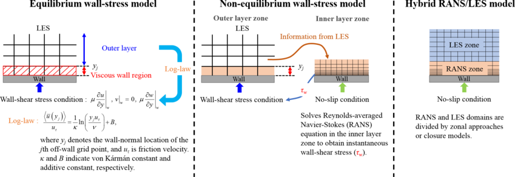
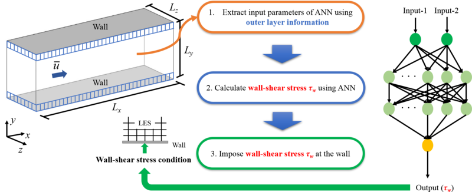
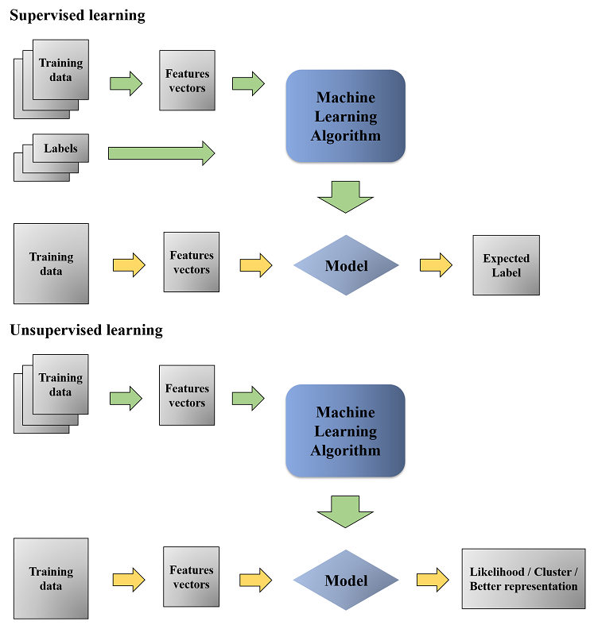
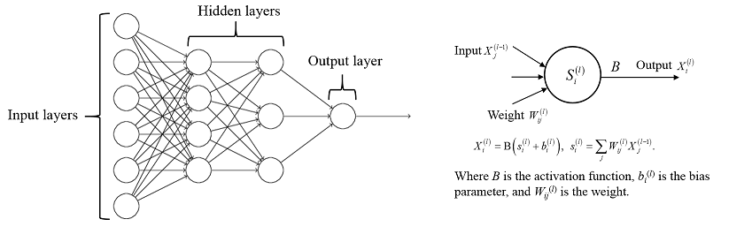

Research
Numerical methods
Two-Parameter Mixed Model for Large-Eddy Simulations
In an effort to improve prediction performance of large-eddy simulation in a transitional boundary layer flow, two-parameter mixed models (i.e., combination of scale-similarity model and sub-grid stress model) have been developed and assessed.
Compressible Flow
Wall-Modeled Large-Eddy Simulations
Although large-eddy simulation (LES) has come to play an important engineering tool in the prediction and analysis of complex turbulent flows for past several decades, application of LES approach in an engineering environment is still very difficult due to the huge computational cost in the near-wall region at high Reynolds numbers. Thus, various wall-modeled LESs (hereafter, WMLES) have been proposed so far, and these methods are generally classified into three types such as equilibrium wall-stress model, non-equilibrium wall-stress model and hybrid RANS/LES model.

Because most previous WMLES methods either use equilibrium assumption or require quite fine grids along the wall-normal direction, we have proposed an artificial neural network (ANN)-based wall-stress model.

Interface-Sharpening Procedure for Incompressible Multi-Phase Flows
Machine Learning in Turbulent Flows
Time-varying turbulent flows are ubiquitous in engineering field and in the life sciences, such as biological propulsion, bio-inspired engineering, automobiles, ships, airplanes. It is observed that the control of unsteady turbulent flow can improve the efficiency, thrust, lift, maneuverability. Machine learning aims to categorize on such dominant patterns of unsteady turbulent flow. In particular, artificial neural networks are one of the types in machine learning. As the "neural" of word suggests, they are human brain-inspired systems. They are excellent tools for finding patterns which are far too complex, such as unsteady turbulent flow.

